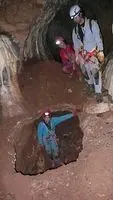

Sevgili Defineciler

Farklı açılardan da olsa hepimiz mağaracıyız, değil mi? Dolayısıyla, sizlere yardımcı olmak bizim boynumuzun borcu. Biliyoruz, sizler çok mağaraya girmişsinizdir, bizler de Türkiye’nin birçok farklı noktasında onlarca, yüzlerce mağaraya girdik. Bulduğumuz, ölçtüğümüz, araştırdığımız ve haritaladığımız birçok mağarayı bize –kendilerini böyle tanımlamamış olsalar da, biz biliyoruz- defineciler gösterdi. Hal böyle olanda, dilerseniz sizlerle bilgilerimizi paylaşalım:- Bazı mağaraların bir yerlerinde gömülü birşeyler olabilir ama bunu bulma olasılığınız yaklaşık olarak 1/7.000.000. Bu olasılık ise kabaca her hafta dağıtılan Sayısal Loto ikramiyesinin olasılığı ile aynı. Yazık değil mi sizlere? O karanlık, izbe, nemli yerlerde kazma sallayacağınıza gidip birer Sayısal Loto alın, ne de olsa olasılık aynı.
- Hadi, diyelim Sayısal Loto almadınız ve “Sana ne lan, ben kazacağım” dediniz. Hadi, aylarca, yıllarca kazdıktan sonra da bir şey buldunuz diyelim. Peki, bu bulduğunuz “birşey”i ne yapacaksanız? Satıp zengin mi olacaksınız? Kime satacaksınız? Tanıdığınız bir aracı var mı? O aracının polis olmadığı ne malum? Kasabanızın kuyumcusuna mı satacaksanız? Yakalanırsa ilk olarak sizin isminizi verecektir, emin olun.
- Basit ve kolay gözükseler de mağaralar tehlikeli yerlerdir. Biz yıllardır mağaralarda define ararken ölen definecilerin cesetlerini çıkartmak için çağırılıyoruz. Akseki’de “Sen bu ipi tut, ben aşağıya iniyorum” deyip inerken düşen defineciden, mağaraya jeneratör sokup karbondioksitten ölene kadar birçok arkadaşınızla – ya da cesetleriyle –- tanıştık. En komiği ise, indiği 65 m’lik kuyudan yukarı çıkamayan ve jandarma tarafından kurtarılan defineci idi. Yani, özet olarak, define ararken arkeolojik bir kalıntı haline gelmeniz mümkündür.
- Öte yandan, tecrübeli bir defineci olarak, mağarada bir mezar bulduğunuzda o ölüyü kollayan, gözleyen cinlerle nasıl başa çıkacağınızı da öğrenmiş olmanız lazım. Ölülerin, mezarlarını tahrip edecek olanlara ettikleri beddualar berbattır. 1920’lerde Mısır’da, Tutankhamon’un mezarını açanların başına neler geldiğini biliyorsunuz, değil mi? Bu işler ne yazık ki köyünüzdeki Hatçe Teyze’nin yazacağı muskalarla olmuyor. Bu tür ucuz muskaların etkilerini yukarıdaki maddede okudunuz! Özellikle mağara cinleri, tüm cin camiasının en beteridir. Bunlarla başa çıkabilmeniz için etkisi çok daha kapsamlı muskalar ve adaklar gerekiyor. Detektör satın aldığınız şirketlerin çoğu el altından böyle muskalar da satmaktalar, onlara danışın, cinleri kızdırmayın!
- “Harita” diye bir şey yok defineci kardeşlerimiz, rüşvetin belgesi olamayacağı gibi definenin de haritası olmaz. Ama, sizler o kadar salaksınız ki her yerde birileri sizin bu salaklığınız dolayısıyla çuvalla para kazanıyor. Eski kâğıtlara birşeyler çizip yakın civardaki mağaralara da işaretler koyuyorlar, sizler de o haritalara abuk paralar verip satın alıyorsunuz. Lan, geri zekalılar, herifler aptal mı ki gidip kendileri kazmıyor, haritayı size satıyorlar? Babaannenizden kalma bir kitabın içinden böyle bir harita çıksa siz merak edip gidip bakmaz mısınız?
- Hiç mağarada define bulup zengin olan birisi ile tanıştınız mı? Pardon, ne dediniz? "Yan köyde yıllar önce Mehmet bir küp altın bulmuş" mu dediniz? Bunu sormuyoruz, siz o "Mehmet" le bizzat tanıştınız ve bu haberi onun ağzından duydunuz mu? Tanışamaz ve duyamazsınız, söylemeyeceği için değil, olmadığı için!
- Mağarada bulunan bir sarkıt veya dikit yaklaşık 3-5 milyon yılda oluşur. Öte yandan, insan denen yaratık bundan yaklaşık 1 milyon yıl önce maymun olmaktan vazgeçip ağaçlardan aşağıya indi. Altını ve parayı ise 2.500 yıl önce keşfetti. Şimdi, bu ne demek? Mağaralardaki dikitlerin altında altın ve para yok demek, defineci kardeşlerim. Hem emeğinize, hem de o mağaraya yazık. O dikitleri kırarak dibini kazacağınıza gidip tarlanıza soğan ekin, bu aralar kilosu 12.- TL.